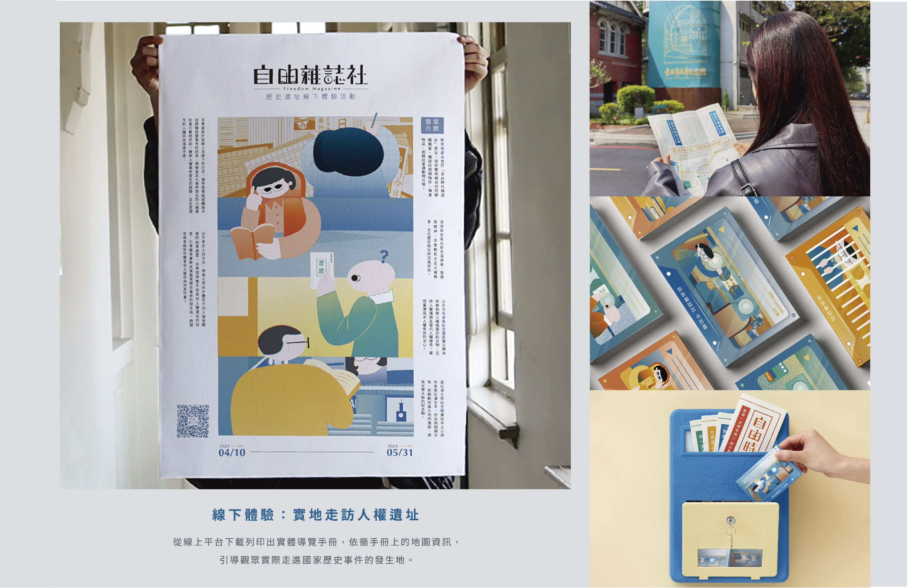
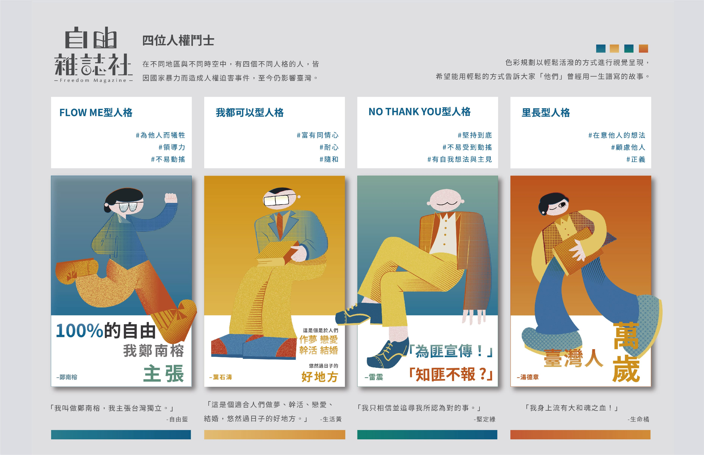
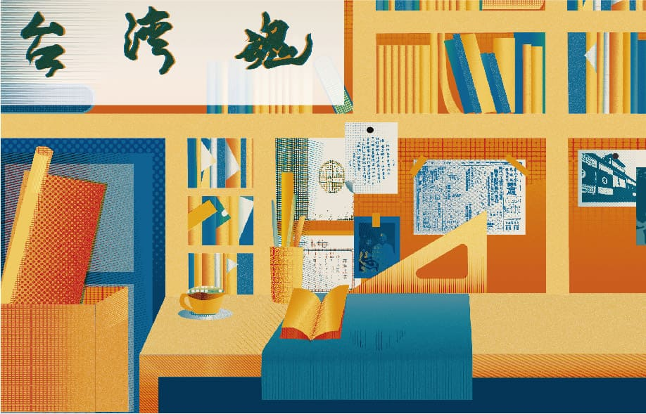
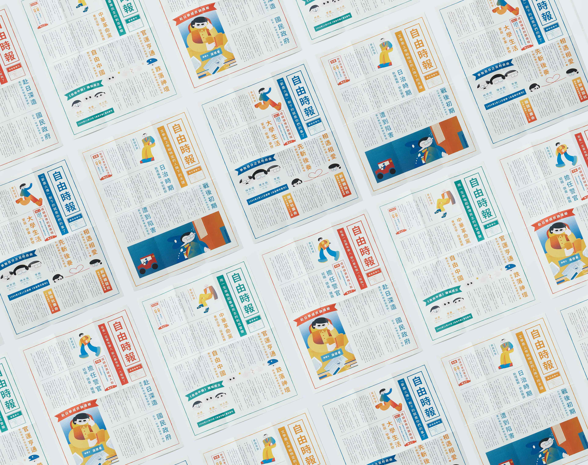
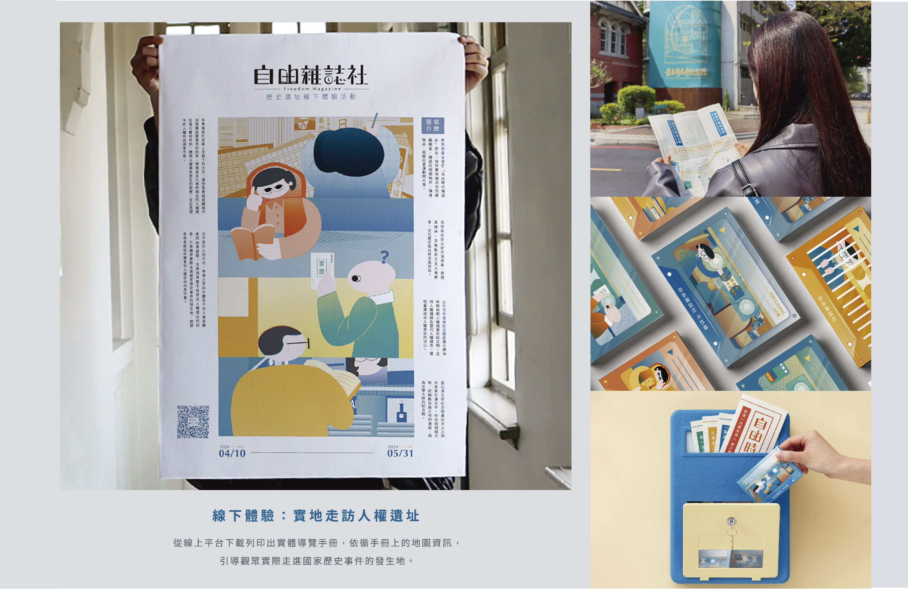
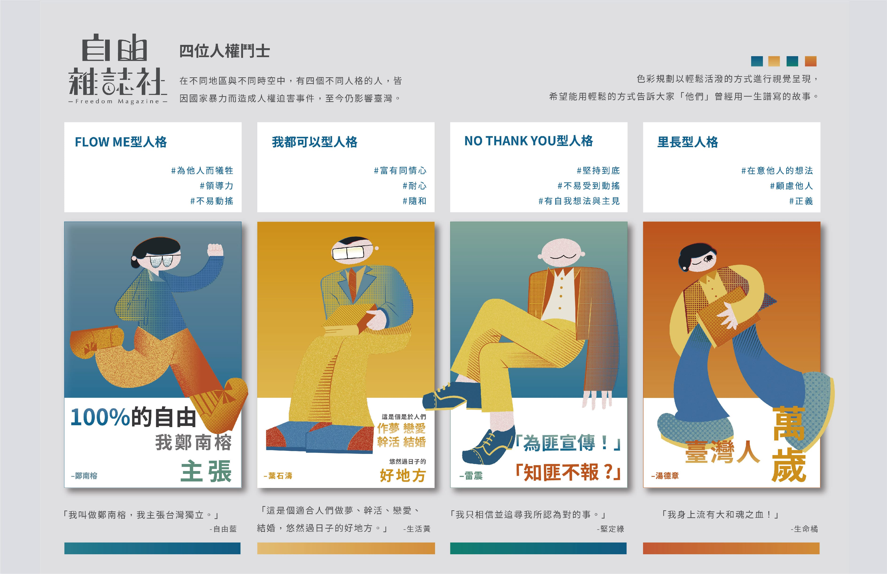
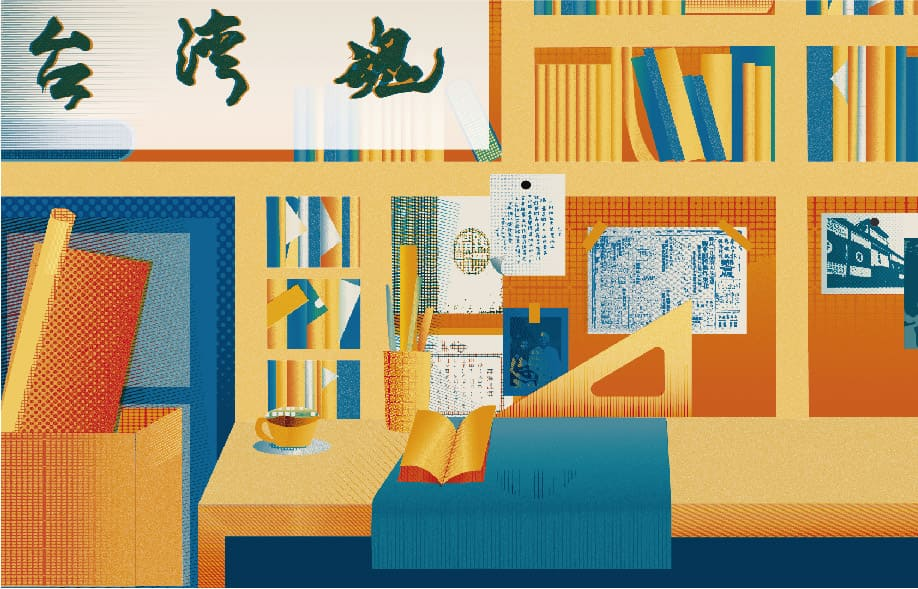
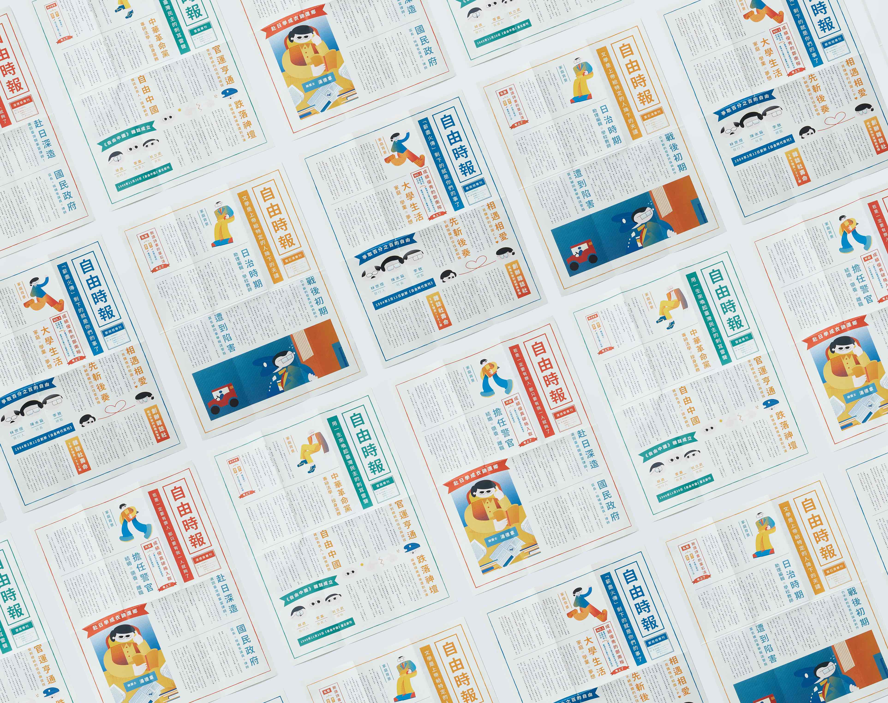

自由雜誌社
「自由雜誌社」是一個關於自由人權之轉型正義的服務設計專案。
本專案設計採以從線上平台引導到線下場址的方式，讓參與者能先從網路平台接觸相關事件的訊息，引導觀眾實際走進國家暴力事件的發生地。
本服務設計的流程是從人物故事的認識，進入到場域空間的體驗，期望參與者能從中深刻體會到人權自由何其珍貴。
"Freedom Magazine Society" is a service design project focused on the transformational justice of human rights. The project is designed to guide participants from an online platform to offline locations, allowing them to first engage with information about relevant events online and then guiding them to physically visit the sites where instances of state violence occurred. The service design process begins with an understanding of the stories of individuals involved, leading participants into the experiential realm of the physical spaces. The goal is for participants to gain a profound appreciation for the preciousness of human rights and freedom through this journey.
 
